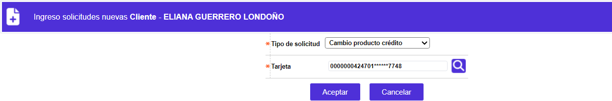
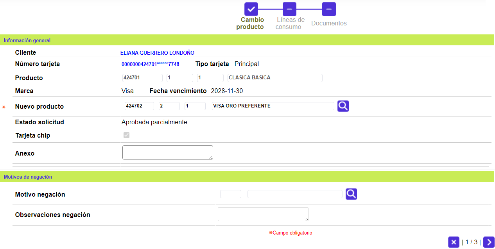
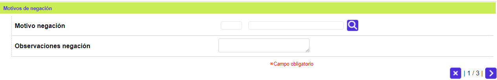
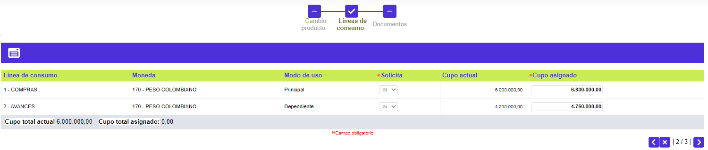
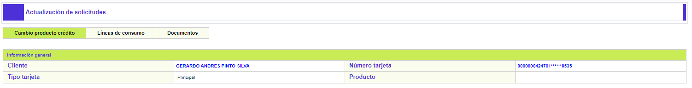
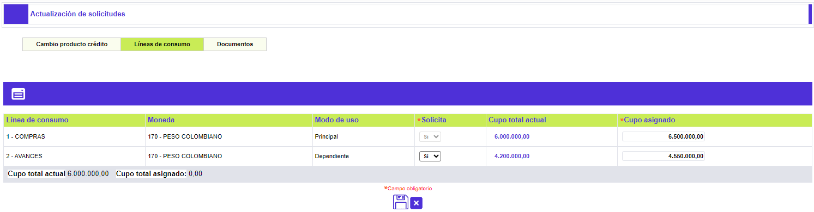
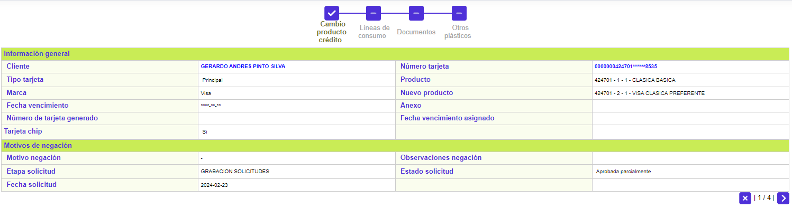
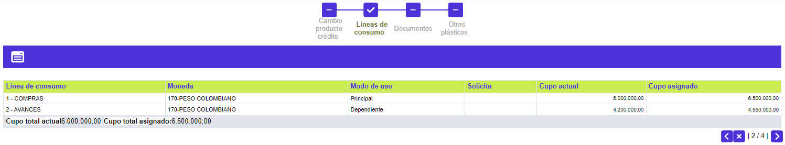

Cambio Producto Crédito
A través de este wizard se puede registrar la solicitud de cambio del producto, usualmente debido a un cambio en el nivel de ingresos o a las necesidades del cliente de poder contar con un producto que atienda otros rubros de sus gastos (educación, salud, turismo, etc).
En el formulario de Ingreso de solicitudes se selecciona la opción Cambio Producto Crédito y la tarjeta a la cual se le ingresará la solicitud.

Tarjeta |
Campo con lista de valores que contiene los diferentes números de tarjeta del cliente. El usuario debe seleccionar aquella para la cual se desea solicitar el cambio de producto crédito. |
Adicionar: una vez se han seleccionado los datos anteriores, se deplegará un wizard de dos pasos. El primero de ellos contiene los bloques Información general y Motivos de negación:

Cliente |
Campo de salida desde el cual se podrá invocar la consulta del cliente al cual se le está ingresando la solicitud. |
Número tarjeta |
Campo de salida desde el cual se podrá invocar la consulta de tarjeta del cliente al cual se le está ingresando la solicitud. |
Tipo tarjeta |
Campo de salida que muestra qué tipo de tarjeta posee el cliente de la solicitud ingresada; puede ser Principal, Extendida, Amparada, o Adicional. |
Producto |
Estos campos se llenan automáticamente una vez ingresado el número de tarjeta asociado a la solicitud, permitiendo conocer el Segmento, Grupo de afinidad y Descripción que junto con el Bin conforman el producto crédito a reponer. |
Marca |
Campo de salida que ilustra la franquicia asociada al producto en la Definición del producto. |
Fecha Vencimiento |
Campo de salida en formato YYYY-MM-DD, que indica la fecha en que expirará el nuevo plástico de la tarjeta, cuando se ha parametrizado que el sistema deba calcular una nueva fecha de vencimiento. |
Nuevo producto |
Campos que despliegan datos una vez se seleccione el nuevo producto a solicitar, de la lista de valores poblada a través de la opción productos filtrada por clase de tarjeta, que puede ser invocada desde el campo Descripción; el Sistema controla que si la tarjeta actual es empresarial solamente la lista muestre productos que correspondan a esa clase de tarjeta, así mismo, se constata que el nuevo producto solicitado tenga como mínimo las mismas líneas de crédito del producto a sustituir. |
Estado solicitd |
Este campo ilustra la condición en que se encuentra la solicitud en cada momento, y que puede ser En zona gris, Negada totalmente, Negada parcialmente, Aprobada totalmente o Aprobada parcialmente. |
| Anexos | Campo que permite ingresar información relacionada con la solicitud, referente a documentos suministrados por el cliente u otros datos. |

Motivo negación |
Si aplica, contiene el código y la descripción de la causal de negación de la solicitud. |
| Observaciones negación | Campo que puede contener notas que ilustren las razones por las cuales fue denegada la solicitud. |
Líneas de crédito: Segundo paso del wizard que contiene los siguientes campos:

Línea de crédito |
Campo que despliega las líneas de crédito parametrizadas en la Definición de productos. |
Moneda |
Campo de salida que ilustra la moneda en la que se expresan los saldos de cada una de las líneas de crédito. |
Modo uso |
Campo de salida que indica si la línea de crédito es Principal, Dependiente, Independiente o Especial, lo que determina si se puede borrar o no en la solicitud, así como la relación entre los cupos a estas asignado. |
Solicita |
Campo que permite señalar si se solicita cupo para la línea o no, la cual también se puede borrar, excepto la línea principal. |
Cupo total actual |
Campo de salida que muestra el monto o valor del cupo actual que posee cada una de las líneas de crédito del producto presente a sustituir. |
Cupo asignado |
Este campo es alimentado automáticamente por el sistema con el mismo monto del valor solicitado, cuando los parámetros de la solicitud indican que ésta no pasará por la etapa de evaluación. Si se ha marcado que no se solicita la línea y si se ingresa algún valor para lineas de credito en cupo asignado, el sistema asignará cero por defecto. Por otro lado si la linea se ha marcado como solicitada el aplicativo exige que por lo menos se diligencie el valor del cupo de la línea principal. |
Cupo solicitado |
Campo que contiene el monto solicitado por cada línea. El sistema controla que dicho cupo no supere el valor máximo parametrizado en las Líneas crédito de la Definición de productos y que la sumatoria de estas tampoco exceda el cupo máximo por producto. Si se ha marcado que no se solicita la línea y si se ingresa algún valor para lineas de credito en cupo solicitado, el sistema asignará cero por defecto. Por otro lado si la línea se ha marcado como solicitada, el sistema permite que tanto la línea principal como las demás queden en cero si el usuario asi lo prefiere, en este caso el aplicativo exigirá que la línea principal tenga algún valor así sea cero. |
A través de los botones de la parte inferior derecha, se podrá regresar, cancelar el proceso, o avanzar al tercer paso del wizard: Documentos.
A través de los botones de la parte inferior derecha, se podrá cancelar el proceso o ir al segundo paso del wizard: Documentos .
Actualizar: Si en formulario del ingreso de solicitudes el usuario invoca la opción Actualizar, se despliega el siguiente formulario.


Detalle: De igual forma, si en formulario del ingreso de solicitudes el usuario invoca la opción Detalle, se despliega el siguiente formulario.
Este formulario cuenta con un paso adicional en el wizard: Otros plásticos. En el cual se muestran el código y descripción de los plásticos “especiales” establecidos en la opción Otros plásticos, de la Definición de productos.

